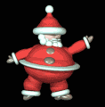

 When Alexander Bell invented the telephone he had 3 missed calls from Chuck Norris. Fear of spiders is aracnaphobia, fear of tight spaces is chlaustraphobia, fear of Chuck Norris is called Logic. Chuck Norris doesn't call the wrong number. You answer the wrong phone. There used to be a street named after Chuck Norris, but it was changed because nobody crosses Chuck Norris and lives. Chuck Norris has a grizzly bear carpet in his room. The bear isn't dead it is just afriad to move. Chuck Norris died 20 years ago, Death just hasn't built up the courage to tell him yet. Chuck Norris has already been to Mars; that's why there are no signs of life. Some magicans can walk on water, Chuck Norris can swim through land. Ghosts sit around the campfire and tell Chuck Norris stories. Chuck Norris and Superman once fought each other on a bet. The loser had to start wearing his underwear on the outside of his pants. Chuck Norris once urinated in a semi truck's gas tank as a joke....that truck is now known as Optimus Prime. Chuck Norris can cut through a hot knife with butter. Chuck Norris doesn't flush the toilet, he scares the sh*t out of it. Chuck Norris won American Idol using only sign language. Death once had a near-Chuck Norris experience. Chuck Norris counted to infinity - twice. Chuck Norris can slam a revolving door. Chuck Norris will never have a heart attack. His heart isn't nearly foolish enough to attack him. Chuck Norris can win a game of Connect Four in only three moves. Chuck Norris once kicked a horse in the chin. Its decendants are known today as Giraffes. Chuck Norris won the World Series of Poker using Pokemon cards. Chuck Norris once got bit by a rattle snake...After three days of pain and agony ...the rattle snake died. There is no theory of evolution. Just a list of animals Chuck Norris allows to live. When Chuck Norris does a pushup, he isn't lifting himself up, he's pushing the Earth down. Chuck Norris can light a fire by rubbing two ice-cubes together. The original title for Alien vs. Predator was Alien and Predator vs Chuck Norris. Chuck Norris doesn't read books. He stares them down until he gets the information he wants. Chuck Norris doesn’t wear a watch. HE decides what time it is. Chuck Norris' dad's name is Chuck Norris Jr. Chuck Norris does not sleep. He waits. Chuck Norris can dribble a bowling ball. Water can't breath under Chuck Norris. Chuck Norris is the only person to really have "Birthdays". The rest of us have "Thank you Chuck for allowing me to live another year- days". When Chuck Norris throws you into a bottomless pit, you hit the bottom.